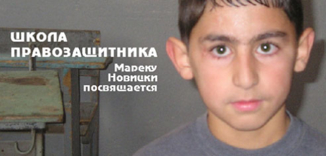
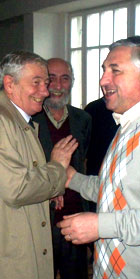
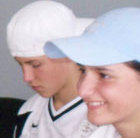
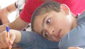

ШКОЛА ПРАВОЗАЩИТНИКА
проект
Кавказского центра Миротворческих Инициатив
при поддержке
мерии города Ноемберян
и учебного комплекса Мхитар Себастаци
Из разговора с шестиклассником Ованесом во дворе школы N 61 города Еревана, осенью 2005 г., после того как прошел второй тур выборов школьного омбудсмена. Овик, имеющий определенные шансы на победу, призвал свой электорат отдать голоса в пользу своего соперника – общепринятого вождя школьного стада.
- Товарищ Луиза, Вы знаете воровские законы?
- Не совсем... знаю, что есть такие законы, больше из фильмов... не знаю в деталях, но могу представить.
- К чему я это говорю... Воровской закон самый правильный, самый сильный, лучше чем права человека... Потому что воровской закон все уважают, тут все четко, у каждого свое место, ты не обижаешь, тебя не обижают и судят по правде, сделал – получи. Только эти законы действуют, других законов нет. Если бы все жили по этим законам было бы хорошо...
- ...Но ведь ты тоже не все знаешь о воровской жизни? Может ошибаешься, может быть и у них несправедливость случается...
- Я знаю достаточно – это хорошие законы... Вам надо изучить их и Вы поймете... Я сам хочу жить только по воровским законам, мне все надоело, тошнит от школы ...
- Дело твое, но как мне подсказывает опыт, все кажется правильным издалека, а изнутри - тоже самое... как в школе...
* * *
«Учит тот, кто сам не может» - услышала я проходя мимо телевизора, краем глаза уловив типично голливудский кадр.
Замечали ли Вы? - что хорошие книги, хорошие фильмы, хорошая музыка и хорошие картины, и вообще все хорошее, имеет такую особенность – оно само приходит к человеку, лично к каждому из нас именно в тот момент, когда это нужно, и оценивает, подсказывает, как поступить и как вообще жить дальше. Думаю, у каждого есть личный бесплатный психоаналитик – многоликое, воплощенное в гениальном. Оно приходит когда надо, не для того, чтобы научить, а просто попасть в точку, и разрядить личную ситуацию отдельно взятого человека. Если кажется, что книга или фильм сами пришли к тебе – может быть это и есть классика, или может это – просто промывание мозгов высочайшего качества? В любом случае, по моему, это действует эффективнее, чем гадание по Библии или Корану ... Если Вы не поняли о чем я, значит плохо выражаю свои мысли. Возможно уже кто-то написал об этом более понятно.
Начиная с восьмого класса мечтала создать школу-театр и в те далекие восьмидесятые думала, что являюсь автором-изобретателем этой идеи (о том, что все в различных вариантах придумано, написано, профинансировано, опробовано, основано, вновь профинансировано, проанализировано, оценено и внедрено - о том, что есть альтернативная педагогика я тогда еще не знала, идеями своими ни с кем не делилась, понимая, что не поймут.) Заочно проучилась на подготовительных курсах факультета истории искусств МГУ, но в Москву поступать не поехала по семейным обстоятельствам. Жизнь пошла по другому руслу, осталась только зацикленность на педагогике, то есть эмоциональное неравнодушие к процессу обучения как таковому - кто-как-чему учит.
Итак, «Учит тот, кто сам не может» - эта фраза как по заказу дополнила мои собственные тоскливо-тягучие мысли о том, что реализовывать мечты опасно. Не зря ли тратится столько энергии, и обнадеживаются те, кто воспринял всерьез школу правозащитника? И не начала ли я учить, просто потому, что сама не могу защитить свои или чьи-либо права и свободы? Не начала ли я учить тому, чего не было, нет и никогда не будет.
Случайно был просмотрен еще один фильм, оттуда мысль: когда неудачник преподает, есть два варианта - или он станет гениальным учителем или монстром, убивающим своих учеников. До недавнего времени Школа правозащитника казалась мне капризом, моим и Георгия Ваняна. Теперь я думаю иначе. Мы не монстры. Мы сделали это – создали школу.
Исполнить свою детскую мечту в сорок лет, собрать класс и преподавать основы правозащиты в Армении-2008 – не трудно, но писать отчет о том, что представляет собой эта самая школа правозащиты или же изложить содержание самого учебного курса – кажется мне сейчас невыполнимой задачей. Делаю попытку написать то, что напишется.
- Товарищ Луиза, Вы знаете воровские законы?
- Не совсем... знаю, что есть такие законы, больше из фильмов... не знаю в деталях, но могу представить.
- К чему я это говорю... Воровской закон самый правильный, самый сильный, лучше чем права человека... Потому что воровской закон все уважают, тут все четко, у каждого свое место, ты не обижаешь, тебя не обижают и судят по правде, сделал – получи. Только эти законы действуют, других законов нет. Если бы все жили по этим законам было бы хорошо...
- ...Но ведь ты тоже не все знаешь о воровской жизни? Может ошибаешься, может быть и у них несправедливость случается...
- Я знаю достаточно – это хорошие законы... Вам надо изучить их и Вы поймете... Я сам хочу жить только по воровским законам, мне все надоело, тошнит от школы ...
- Дело твое, но как мне подсказывает опыт, все кажется правильным издалека, а изнутри - тоже самое... как в школе...
* * *
«Учит тот, кто сам не может» - услышала я проходя мимо телевизора, краем глаза уловив типично голливудский кадр.
Замечали ли Вы? - что хорошие книги, хорошие фильмы, хорошая музыка и хорошие картины, и вообще все хорошее, имеет такую особенность – оно само приходит к человеку, лично к каждому из нас именно в тот момент, когда это нужно, и оценивает, подсказывает, как поступить и как вообще жить дальше. Думаю, у каждого есть личный бесплатный психоаналитик – многоликое, воплощенное в гениальном. Оно приходит когда надо, не для того, чтобы научить, а просто попасть в точку, и разрядить личную ситуацию отдельно взятого человека. Если кажется, что книга или фильм сами пришли к тебе – может быть это и есть классика, или может это – просто промывание мозгов высочайшего качества? В любом случае, по моему, это действует эффективнее, чем гадание по Библии или Корану ... Если Вы не поняли о чем я, значит плохо выражаю свои мысли. Возможно уже кто-то написал об этом более понятно.
Начиная с восьмого класса мечтала создать школу-театр и в те далекие восьмидесятые думала, что являюсь автором-изобретателем этой идеи (о том, что все в различных вариантах придумано, написано, профинансировано, опробовано, основано, вновь профинансировано, проанализировано, оценено и внедрено - о том, что есть альтернативная педагогика я тогда еще не знала, идеями своими ни с кем не делилась, понимая, что не поймут.) Заочно проучилась на подготовительных курсах факультета истории искусств МГУ, но в Москву поступать не поехала по семейным обстоятельствам. Жизнь пошла по другому руслу, осталась только зацикленность на педагогике, то есть эмоциональное неравнодушие к процессу обучения как таковому - кто-как-чему учит.
Итак, «Учит тот, кто сам не может» - эта фраза как по заказу дополнила мои собственные тоскливо-тягучие мысли о том, что реализовывать мечты опасно. Не зря ли тратится столько энергии, и обнадеживаются те, кто воспринял всерьез школу правозащитника? И не начала ли я учить, просто потому, что сама не могу защитить свои или чьи-либо права и свободы? Не начала ли я учить тому, чего не было, нет и никогда не будет.
Случайно был просмотрен еще один фильм, оттуда мысль: когда неудачник преподает, есть два варианта - или он станет гениальным учителем или монстром, убивающим своих учеников. До недавнего времени Школа правозащитника казалась мне капризом, моим и Георгия Ваняна. Теперь я думаю иначе. Мы не монстры. Мы сделали это – создали школу.
Исполнить свою детскую мечту в сорок лет, собрать класс и преподавать основы правозащиты в Армении-2008 – не трудно, но писать отчет о том, что представляет собой эта самая школа правозащиты или же изложить содержание самого учебного курса – кажется мне сейчас невыполнимой задачей. Делаю попытку написать то, что напишется.
ОТКРЫТИЕ
Решения получаются разные,
в зависимости от того, как мы думаем.
Марек Новицки

Томаш Кноте, Афет Сариев и Ашот Блеян
Формальное открытие Школы правозащитника состоялось еще в декабре, в присутствии посла Польши в Армении Томашa Кноте, лично знающего Марека Новицки, директора общеобразовательного комплекса Мхитар Себастаци, главного покровителя идеи необходимости правозащитного образования – Ашота Блеяна, представителя Хельсинской гражданской ассамблеи Хамиса Масимова, имеющего счастье быть в аудитории Марека Новицки, Джианши Омарова, который учился в школе Хельсинского фонда на том же курсе, что и Георгий Ванян (они оба опоздали - Марека Новицки уже не было), Рауфа Раджабова – политолога, Сахиба Бабаева – юриста, Афета Сариева – философа. Сеймур Байджан, если не ошибаюсь, остался в соседнем классе журналистики – и до сих пор, если не ошибаюсь, он остался также при своем мнении, что права человека – это скучные лекции о декларациях-конвециях.
Все приветствовали открытие школы. Я вынуждена была ненадолго покинуть собрание поскольку второпях забыла заплатить за такси на котором приехала, водитель прождав сорок минут отправил ко мне мальчика-посыльного, чтобы напомнить о себе. Пришлось раскошелится просто так, по неумышленной халатности. Халатность - халат - подарок. Может это хорошая примета, добрый знак?
Когда мне предоставили слово, сказала о том, что взволнована, потому что исполняется моя мечта – познакомить некоторое количество желающих со своим Учителем - Мареком Новицки. И дальше, помню, сказала пару предложений на отвлеченно-философскую тему – о том, что у каждого есть свой учитель, но не каждому выдается такой удачный шанс – поделиться знанием, помочь другим пройти тот же путь понимания. Я действительно и очень волновалась и говорила сумбурно – в библейском стиле.
Осталось впечатление, что причину моего волнения понял только посол Польши в Армении, потому что - он из Польши, знал кто есть Марек Новицки и потому что - улыбаясь, одобрительно кивал, пока я говорила.
В общем церемонию открытия можно было считать состоявшейся, столь же состоявшимся был первый курс «Права человека: основные понятия».
Но надо чувствовать процесс. В моем понимании Школа правозащитника открылась 22 июля 2008 в средней школе N 1 города Ноемберяна, на уроке, на самом краю Армении, в нескольких километрах от границы с Азербайджаном и в нескольких километрах от границы с Грузией. Ребятам ( 8 человек из Еревана, остальные –местные, 10-11 класс) было предложено два вопроса – может ли существовать наказание, не предусматривающее унижение человеческого достоинства? И нужно ли стремиться к тому, чтобы наказание не унижало достоинство?
После небольшой дискуссии началась игра. По правилам игры – весь мир, все человечество за окном, ждало решения вопроса – каковым будет с сегодняшнего дня наказание для нарушивших закон, будет ли и впредь попираться человеческое достоинство того, кого наказывают за что-либо или нет. Если представить ситуацию упрощенно-утрированно, то получалось так – должен ли полицейский, учитель, налоговый инспектор – делать злое лицо, оскорблять, бить, унижать всеми доступными способами человека, которого он обязан наказать в силу закона. Речь по сути шла о допустимости превышения границ власти и нарушении Статьи 17 Конституции Армении.
Обычно, в таких случаях самое важное удостовериться в том, что абсолютно все поняли постановку вопроса. В тот день я привела несколько примеров из фильмов, из взрослой и школьной жизни, вот один из них, школьный:
Описание ситуации, условие:
Ученик старших классов, на одном из уроков, предположим на уроке географии, взял ручку и начал старательно выписывать на парте то, что пришло ему в голову. Учитель заметил это действие ученика.
Решение:
Вариант 1. Учитель приказывает ученику встать и говорит примерно следующее: Ты вандал и варвар, вот объясни мне сейчас перед всем классом – почему ты сделал это? А мы послушаем... Ты – позор своей семьи, отвечай мне, разве твои родители разрешают тебе писать на столе? На какой стадии человеческого развития ты вообще находишься? Надо заставить тебя ногтями выскребать эту гадость с парты... Садись, мне нечего сказать...
На ближайшем родительском собрании учитель говорит родителю этого ученика: Вот если бы Ваш сын не рисовал на партах во время уроков, мы бы смогли более эффективно распорядится родительским фондом, а теперь приходится тратить все деньги на постоянный ремонт школьного имущества, поскольку ваши дети никак не могут понять что школа - их второй дом. (И учитель объявляет, что с каждого родителя полагается N-ная сумма в родительский фонд).
Вариант 2: Учитель никак не реагирует на то, что видит. Урок продолжается. Ученик спокойно дорисовывает, пока не надоест или пока не закончит задуманный узор.
В тот же день, родителей ученика по телефону (факсу, письмом, посредством электронной почты) из хозяйственного отдела школы информируют о том, что их ребенок нанес ущерб школьному имуществу в размере N условных единиц и данная сумма должна быть компенсирована в течение ближайших N дней. Родителям также напоминают о соответствующей статье договора, заключенного с одним из них, в котором оговорены меры, которые будут предприняты в случае не получения компенсации (например, исключение ученика из школы).
Выбор между вариантами 1 и 2 должен был помочь каждому из слушателей курса сориентироваться в игре и выбрать собственную позицию.
Мы сидели по кругу и каждый по часовой стрелке вынес свой вердикт. Мнения разделились. Из 20 человек четверо решили, что невозможно наказать человека без попрания, унижения его человеческого достоинства. Этим четверым было предложено сесть с одной стороны стола, а остальным – с другой. Была поставлена задача обеим группам: переубедить друг друга, заставить поменять мнение и место за столом. Решение должно было войти в силу только в том случае, если с ним согласны абсолютно все. Георгий и я были вне игры, сели на стулья для наблюдателей в отдалении.
Сразу же поднялся шум, все начали говорить одновременно. Кто-то из ребят предложил, чтобы не оглохнуть, взять ручку и представить, что это микрофон, то есть была попытка договориться о правиле – говорит только тот у кого ручка, остальные слушают. Не выдержали, при передаче «микрофона» возник спор между претендентами на его получение – ручка потеряла магический смысл, все благополучно вернулись к многоголосному словесному бою. Шум явно распространялся за пределы школы. Георгий не выдержав экспериментальных условий вышел из класса. Я же, оставшись, уже не вникала, различаемые отрывки свидетельствовали, что все говорят по теме и еще несколько голосов периодично выкрикивали: Не кричи!
Группа «большевиков» поменяла тактику, двое-трое из них окружили по одному «меньшевику» и начали индивидуальную обработку. Прошло более часа, а результат был нулевым. Никто не поменял свое место. Все устали и постепенно замолкли. Но тональность разговора двоих юношей – друзей-одноклассников, оказавшихся по разную сторону баррикад, все нарастала. Они уже не кричали, а орали друг на друга, робкие попытки остальных ребят остудить спор только больше распаляли их словесную дуэль (по форме выражения – дворовую разборку), которая грозилась перерасти в рукопашную. Притом они оба уже не слушали друг друга, каждый повторял свою мысль в различных вариациях.
Тут уже можно в двух словах объяснить суть спора. Поскольку в данном изложении содержится личная информация, назовем спорщиков условно А. и Б. На одной из стадий дискуссии А. решил привести пример из жизни Б. и доказать ему, что когда дело касается лично самого Б., он сам не считает, что унижение необходимо для того, чтобы человек понял, что он сделал что-то плохое. А. напомнил об одном из многочисленных случаев из их общей школьной жизни: Б. вел себя плохо и мешал учительнице вести урок, учительница оскорбила его бранным словом, Б. вспылил и самовольно покинул класс. По мнению А. это может означать, что Б. не искренен в своей позиции, одобряющей унижение как единственное средство исправления человека, поскольку он не смирился с оскорблением и нарушил закон еще раз, самовольно покинув класс. Б. заявил, что А. говорит чепуху, потому что этот случай как раз доказывает обратное – он пришел на следующий урок этой учительницы и вел себя тихо, потому что осознал, что был не прав, благодаря тому, что его оскорбили.
А. обвиняет Б. во лжи: Ты говоришь неправду, я знаю тебя очень хорошо, ты никогда не изменишься, сколько бы тебя не оскорбляли. Будь искренен, признай это.
На это Б. отвечает: Какое ты имеешь право выносить мою личность на публичное обсуждение? Мы говорим не обо мне, а вообще о человечестве, о преступниках, что прикажешь цацкаться с убийцами?
А. отвечает: Но если ты сам про себя не так думаешь, почему ты уверен что все остальные станут лучше, если их наказывать оскорблением. Признай тот факт, что для тебя лично оскорбление, унижение не может быть гарантией того, что ты не повторишь свой проступок. Когда ты это признаешь, я продолжу переубеждать тебя ...
Б.: Я никогда не признаю это, ты обвинил меня во лжи – как я могу тебя слушать?
А.: Прошу тебя, это очень важно, чтобы ты понял, послушай меня я все повторю сначала. На самом деле ты не думаешь так, как говоришь, я знаю тебя, кто-кто, а ты не должен так думать...
Б.: Что ты пристал ко мне лично, мы говорим об общих вещах, обо всех людях, человека пока не унизишь, он ничего не поймет. Хочешь слышать обо мне – пожалуйста – да, пока меня не оскорбят, не унизят я не пойму, что сделал что-то плохое...
А.: Ты хочешь сказать, что для того, чтобы ты тихо сидел на уроках учитель должен тебя оскорбить? Ты должен признать, что это не так, ведь я тебя знаю как свои пять пальцев...
Тут вернулся Георгий и, обескураженный тоном и лексикой разговора, вмешался: Ребята, я думаю, вы очень отклонились от темы... Поднялся хор голосов: Нет, они не отклонились от темы, им надо закончить...
Но через несколько минут стало ясно – диалог уже невозможен, мы всей группой решили – брейк, и даже не продолжили разговор на следующий день. Остальные трое «меньшевиков» были готовы признать свое поражение, но их оппоненты не настаивали, все равно до абсолютной победы было далеко, ведь Б. остался при своем мнении. Мир за окнами не изменился, но именно в тот день открылась Школа правозащитника. Почему? Мне трудно объяснить. Просто почувствовала процесс: День рождения - 22 июня, 2008. Место рождения: г. Ноемберян.
P.S.: 22 июня - День зимнего солнцестояния в Антарктиде, середина антарктической зимы и первый день Великой Отечественной войны (косвенное подтверждение того, что Гитлер, советовался с астрологами, и Сталин (?) тоже). Но мне нравится другое совпадение - 22 июня отмечается как День учителя в Сальвадоре.
Все приветствовали открытие школы. Я вынуждена была ненадолго покинуть собрание поскольку второпях забыла заплатить за такси на котором приехала, водитель прождав сорок минут отправил ко мне мальчика-посыльного, чтобы напомнить о себе. Пришлось раскошелится просто так, по неумышленной халатности. Халатность - халат - подарок. Может это хорошая примета, добрый знак?
Когда мне предоставили слово, сказала о том, что взволнована, потому что исполняется моя мечта – познакомить некоторое количество желающих со своим Учителем - Мареком Новицки. И дальше, помню, сказала пару предложений на отвлеченно-философскую тему – о том, что у каждого есть свой учитель, но не каждому выдается такой удачный шанс – поделиться знанием, помочь другим пройти тот же путь понимания. Я действительно и очень волновалась и говорила сумбурно – в библейском стиле.
Осталось впечатление, что причину моего волнения понял только посол Польши в Армении, потому что - он из Польши, знал кто есть Марек Новицки и потому что - улыбаясь, одобрительно кивал, пока я говорила.
В общем церемонию открытия можно было считать состоявшейся, столь же состоявшимся был первый курс «Права человека: основные понятия».
Но надо чувствовать процесс. В моем понимании Школа правозащитника открылась 22 июля 2008 в средней школе N 1 города Ноемберяна, на уроке, на самом краю Армении, в нескольких километрах от границы с Азербайджаном и в нескольких километрах от границы с Грузией. Ребятам ( 8 человек из Еревана, остальные –местные, 10-11 класс) было предложено два вопроса – может ли существовать наказание, не предусматривающее унижение человеческого достоинства? И нужно ли стремиться к тому, чтобы наказание не унижало достоинство?
После небольшой дискуссии началась игра. По правилам игры – весь мир, все человечество за окном, ждало решения вопроса – каковым будет с сегодняшнего дня наказание для нарушивших закон, будет ли и впредь попираться человеческое достоинство того, кого наказывают за что-либо или нет. Если представить ситуацию упрощенно-утрированно, то получалось так – должен ли полицейский, учитель, налоговый инспектор – делать злое лицо, оскорблять, бить, унижать всеми доступными способами человека, которого он обязан наказать в силу закона. Речь по сути шла о допустимости превышения границ власти и нарушении Статьи 17 Конституции Армении.
Обычно, в таких случаях самое важное удостовериться в том, что абсолютно все поняли постановку вопроса. В тот день я привела несколько примеров из фильмов, из взрослой и школьной жизни, вот один из них, школьный:
Описание ситуации, условие:
Ученик старших классов, на одном из уроков, предположим на уроке географии, взял ручку и начал старательно выписывать на парте то, что пришло ему в голову. Учитель заметил это действие ученика.
Решение:
Вариант 1. Учитель приказывает ученику встать и говорит примерно следующее: Ты вандал и варвар, вот объясни мне сейчас перед всем классом – почему ты сделал это? А мы послушаем... Ты – позор своей семьи, отвечай мне, разве твои родители разрешают тебе писать на столе? На какой стадии человеческого развития ты вообще находишься? Надо заставить тебя ногтями выскребать эту гадость с парты... Садись, мне нечего сказать...
На ближайшем родительском собрании учитель говорит родителю этого ученика: Вот если бы Ваш сын не рисовал на партах во время уроков, мы бы смогли более эффективно распорядится родительским фондом, а теперь приходится тратить все деньги на постоянный ремонт школьного имущества, поскольку ваши дети никак не могут понять что школа - их второй дом. (И учитель объявляет, что с каждого родителя полагается N-ная сумма в родительский фонд).
Вариант 2: Учитель никак не реагирует на то, что видит. Урок продолжается. Ученик спокойно дорисовывает, пока не надоест или пока не закончит задуманный узор.
В тот же день, родителей ученика по телефону (факсу, письмом, посредством электронной почты) из хозяйственного отдела школы информируют о том, что их ребенок нанес ущерб школьному имуществу в размере N условных единиц и данная сумма должна быть компенсирована в течение ближайших N дней. Родителям также напоминают о соответствующей статье договора, заключенного с одним из них, в котором оговорены меры, которые будут предприняты в случае не получения компенсации (например, исключение ученика из школы).
Выбор между вариантами 1 и 2 должен был помочь каждому из слушателей курса сориентироваться в игре и выбрать собственную позицию.
Мы сидели по кругу и каждый по часовой стрелке вынес свой вердикт. Мнения разделились. Из 20 человек четверо решили, что невозможно наказать человека без попрания, унижения его человеческого достоинства. Этим четверым было предложено сесть с одной стороны стола, а остальным – с другой. Была поставлена задача обеим группам: переубедить друг друга, заставить поменять мнение и место за столом. Решение должно было войти в силу только в том случае, если с ним согласны абсолютно все. Георгий и я были вне игры, сели на стулья для наблюдателей в отдалении.
Сразу же поднялся шум, все начали говорить одновременно. Кто-то из ребят предложил, чтобы не оглохнуть, взять ручку и представить, что это микрофон, то есть была попытка договориться о правиле – говорит только тот у кого ручка, остальные слушают. Не выдержали, при передаче «микрофона» возник спор между претендентами на его получение – ручка потеряла магический смысл, все благополучно вернулись к многоголосному словесному бою. Шум явно распространялся за пределы школы. Георгий не выдержав экспериментальных условий вышел из класса. Я же, оставшись, уже не вникала, различаемые отрывки свидетельствовали, что все говорят по теме и еще несколько голосов периодично выкрикивали: Не кричи!
Группа «большевиков» поменяла тактику, двое-трое из них окружили по одному «меньшевику» и начали индивидуальную обработку. Прошло более часа, а результат был нулевым. Никто не поменял свое место. Все устали и постепенно замолкли. Но тональность разговора двоих юношей – друзей-одноклассников, оказавшихся по разную сторону баррикад, все нарастала. Они уже не кричали, а орали друг на друга, робкие попытки остальных ребят остудить спор только больше распаляли их словесную дуэль (по форме выражения – дворовую разборку), которая грозилась перерасти в рукопашную. Притом они оба уже не слушали друг друга, каждый повторял свою мысль в различных вариациях.
Тут уже можно в двух словах объяснить суть спора. Поскольку в данном изложении содержится личная информация, назовем спорщиков условно А. и Б. На одной из стадий дискуссии А. решил привести пример из жизни Б. и доказать ему, что когда дело касается лично самого Б., он сам не считает, что унижение необходимо для того, чтобы человек понял, что он сделал что-то плохое. А. напомнил об одном из многочисленных случаев из их общей школьной жизни: Б. вел себя плохо и мешал учительнице вести урок, учительница оскорбила его бранным словом, Б. вспылил и самовольно покинул класс. По мнению А. это может означать, что Б. не искренен в своей позиции, одобряющей унижение как единственное средство исправления человека, поскольку он не смирился с оскорблением и нарушил закон еще раз, самовольно покинув класс. Б. заявил, что А. говорит чепуху, потому что этот случай как раз доказывает обратное – он пришел на следующий урок этой учительницы и вел себя тихо, потому что осознал, что был не прав, благодаря тому, что его оскорбили.
А. обвиняет Б. во лжи: Ты говоришь неправду, я знаю тебя очень хорошо, ты никогда не изменишься, сколько бы тебя не оскорбляли. Будь искренен, признай это.
На это Б. отвечает: Какое ты имеешь право выносить мою личность на публичное обсуждение? Мы говорим не обо мне, а вообще о человечестве, о преступниках, что прикажешь цацкаться с убийцами?
А. отвечает: Но если ты сам про себя не так думаешь, почему ты уверен что все остальные станут лучше, если их наказывать оскорблением. Признай тот факт, что для тебя лично оскорбление, унижение не может быть гарантией того, что ты не повторишь свой проступок. Когда ты это признаешь, я продолжу переубеждать тебя ...
Б.: Я никогда не признаю это, ты обвинил меня во лжи – как я могу тебя слушать?
А.: Прошу тебя, это очень важно, чтобы ты понял, послушай меня я все повторю сначала. На самом деле ты не думаешь так, как говоришь, я знаю тебя, кто-кто, а ты не должен так думать...
Б.: Что ты пристал ко мне лично, мы говорим об общих вещах, обо всех людях, человека пока не унизишь, он ничего не поймет. Хочешь слышать обо мне – пожалуйста – да, пока меня не оскорбят, не унизят я не пойму, что сделал что-то плохое...
А.: Ты хочешь сказать, что для того, чтобы ты тихо сидел на уроках учитель должен тебя оскорбить? Ты должен признать, что это не так, ведь я тебя знаю как свои пять пальцев...
Тут вернулся Георгий и, обескураженный тоном и лексикой разговора, вмешался: Ребята, я думаю, вы очень отклонились от темы... Поднялся хор голосов: Нет, они не отклонились от темы, им надо закончить...
Но через несколько минут стало ясно – диалог уже невозможен, мы всей группой решили – брейк, и даже не продолжили разговор на следующий день. Остальные трое «меньшевиков» были готовы признать свое поражение, но их оппоненты не настаивали, все равно до абсолютной победы было далеко, ведь Б. остался при своем мнении. Мир за окнами не изменился, но именно в тот день открылась Школа правозащитника. Почему? Мне трудно объяснить. Просто почувствовала процесс: День рождения - 22 июня, 2008. Место рождения: г. Ноемберян.
P.S.: 22 июня - День зимнего солнцестояния в Антарктиде, середина антарктической зимы и первый день Великой Отечественной войны (косвенное подтверждение того, что Гитлер, советовался с астрологами, и Сталин (?) тоже). Но мне нравится другое совпадение - 22 июня отмечается как День учителя в Сальвадоре.
ЛИХА БЕДА - НАЧАЛО
Самое важное, что люди приходят
и говорят на тему прав человека.
Это важно для них.
Марек Новицки
и говорят на тему прав человека.
Это важно для них.
Марек Новицки

Попробую далее придерживаться хронологии. После проекта «Дни Азербайджана» и следовавших за ним зимних каникул, удалось еще раза два собрать первичный ученический состав школы - для подведения итогов и прояснения планов на будущее. Объявили о том, что занятия будут проходить по понедельникам, вторникам и субботам с 13.30 по 15.30. для всех заинтересованных ребят.
В течение трех месяцев мы, я и Георгий, сменяя друг друга, работали следующим образом: приходят ученики, по-одному или по двое, рекордное число одновременного посещения – четверо, и говорят: Мы пришли. Начинаем урок. Воспользовавшись первой же возможностью вставить слово, пришедшие начинают излагать случаи нарушения прав и свобод учеников – проще говоря жалуются на учителей, иногда на товарищей. Подробно разбираем каждый случай, чтобы понять есть нарушение или нет. Было и такое: пришли шестиклассники, я им говорю: вам пока рано, приходите в сентябре. А они: у нас есть жалоба, мы хотим поговорить. Поговорили, но не решили проблему, пока не решили.
Если суммировать типы нарушений, которые мы обсуждали, вырисовывается старая как мир картина – рукоприкладство, оскорбления, плюс вмешательство в личную жизнь. Анализируем каждый случай, начинают понимать в каком смысле учителя – это власть, и в каком смысле они – единицы. Некоторая часть урока проходит над размышлениями – что делать? как можно что-либо изменить? Иногда часами вспоминаем свое школьное прошлое, я свое, они свое. А у вас бывало так? - спрашиваем друг друга. И оказывается, что мы из одной и той же школы. Из советской? Или школа - она всегда одна и та же? Сколько не фокусничай, твори и альтернативничай – система сильнее. В общем мы сплетничали, вспоминали, фантазировали. Занимались школоведением.
Во всю эту на первый взгляд хаотичную деятельность вкрапливалась теория – философское восприятие понятий: достоинство, права и свободы, власть и единица. Также говорили о том, что есть такая важная вещь – Конституция. (да, эта такая книжка – варианты: зеленная, красная, тонкая, у дедушки есть – сразу показывали мне свою осведомленность ученики).
На каждую из тем я говорила наверное от 10 до 20 раз. Так получалось, что многие приходили в школу правозащитника просто из любопытства или за кампанию, некоторые для того, чтобы провести время между уроками и тренировкой в спортивной секции. Схема посещений в итоге такая – человек 30 плавучая аудитория, костяк постоянных слушателей – 9. Случалось, как правило, так: раньше ходили вдвоем, прибавился третий, спрашиваю: ну кто расскажет нам про достоинство? Ответ: уж лучше Вы, товарищ Луиза. Снова рассказываю, те двое, с которыми говорила на прошлой неделе – опять слушают с интересом, потому что примеры привожу другие. Говорят: сегодня Вы ему объяснили лучше, чем нам. Работаем мы без ручек, тетрадей, домашнего задания. Индикатор прогресса: употребление в речи слов «достоинство», «право», «свобода», «нарушение» в их правозащитном смысле. «Это мы не обсуждаем, это в зоне морали... это семейное дело...» – подобная реплика тоже засчитывается как успех. Такая вот методика - ненавязчивое репетиторство или можно по-другому – ненасильственная ликвидация безграмотности.
При одной особо удачной связке школьного быта с требованием недопущения пыток и унижения, у одной из девочек, Елены, случилась самостоятельная правозащитная мысль – Эврика! - когда учителя объявляют оценки они, пользуясь случаем, унижают наше достоинство – надо запретить им это! Несколько дней эта мысль курсировала по потокам посещающих школу и нашла безоговорочную поддержку у всех учеников. Я терпеливо ждала чуда – вдруг у кого нибудь промелькнет еще одна мысль, в частности о том, что оценка – это личная информация и по этой причине тоже не подлежит огласке. Не дождалась, сама предложила, а ребята одобрили.
Появился ориентир – правозащитная мысль явно тянула на законодательную инициативу, которую надо грамотно оформить и представить, по закону – на рассмотрение Совета Школы. Но мы решили сначала обсудить эту инициативу с учителями. Возникла новая задача – как это сделать? Ведь о правах человека знают немногие, а оценки ставят все. Может проведем уроки для учителей? И потом только обсудим предлагаемые изменения. Ориентир привел к новой цели – поделиться знаниями с учителями, отчитаться о том, чему уже научились. Также поменялся формат наших уроков, новые темы были заморожены, и ребята, каждый выбрав из пройденных любимую, приступили к репетициям. Вскоре воодушевление сменилось всеобщим унынием. Мы все, я, Георгий Ванян и юные правозащитники пришли к печальному выводу – накопленные за этот период знания не придают достаточной уверенности, ребята часто сбиваются, говорят не корректно, путаются. А сроки поджимали - учебный год близился к концу. Было два выхода – быстрыми темпами организовать школьный утренник, то есть каждый просто вызубрит свою роль - или читать по бумаге заранее написанные тексты. Остановились на последнем варианте, как на более верном, опытных зубрилок среди нас не нашлось.
Мы составили тексты по темам: Достоинство. Право. Свобода. Власть и Единица. Равенство. Не написали, а составили: доклады учеников целиком состояли из цитат взятых у Марека Новицки, «Власть и единица» и соответствующих статей Конституции Республики Армения.
Было создано два документа. 1. Законодательная инициатива внесения в «Правила внутренней дисциплины школы» статьи, закрепляющей статус школьной оценки – как информации доступной только для учителя, оцениваемого ученика и его родителей. Устав должен предусматривать также меру наказания за публичное объявление оценок со стороны учителей. 2. Предложение о введении конституционного порядка в школе, о начале создания Конституции школьной общины, проведении референдума. Оба документа, после представления учителям направлялись в адрес дирекции с просьбой предоставить ответ в течение 7 дней в соответствии с требованиями «Правил внутренней дисциплины школы».
В программе было еще выступление одного очень интересного двенадцатилетнего мальчика, бескомпромиссного поклонника идеи равенства – как единственного пути для счастья и процветания всего человечества. Он в своем докладе предлагал задуматься на следующую тему: Школьная практика доказывает, что родители по разному относятся к школе, некоторые проявляют большой интерес, а некоторые игнорируют школу, или же могут быть негативно настроены к ней, а сама школа в лице учителей отвечает тем же их ребенку. В таком случае возникает вопиющее неравенство между учениками – ведь родителей не выбирают. Вот такая информация для размышления.
Сроки были намечены. Выбраны докладчики и группа поддержки из старших классов. - Мы не сможем им все объяснить, они не будут слушать и не поймут... – предсказывали ребята, но и думать не хотели о том, чтобы отложить столь ответственное мероприятие – пусть учителя как можно скорее узнают, чем мы тут занимаемся ...
В течение трех месяцев мы, я и Георгий, сменяя друг друга, работали следующим образом: приходят ученики, по-одному или по двое, рекордное число одновременного посещения – четверо, и говорят: Мы пришли. Начинаем урок. Воспользовавшись первой же возможностью вставить слово, пришедшие начинают излагать случаи нарушения прав и свобод учеников – проще говоря жалуются на учителей, иногда на товарищей. Подробно разбираем каждый случай, чтобы понять есть нарушение или нет. Было и такое: пришли шестиклассники, я им говорю: вам пока рано, приходите в сентябре. А они: у нас есть жалоба, мы хотим поговорить. Поговорили, но не решили проблему, пока не решили.
Если суммировать типы нарушений, которые мы обсуждали, вырисовывается старая как мир картина – рукоприкладство, оскорбления, плюс вмешательство в личную жизнь. Анализируем каждый случай, начинают понимать в каком смысле учителя – это власть, и в каком смысле они – единицы. Некоторая часть урока проходит над размышлениями – что делать? как можно что-либо изменить? Иногда часами вспоминаем свое школьное прошлое, я свое, они свое. А у вас бывало так? - спрашиваем друг друга. И оказывается, что мы из одной и той же школы. Из советской? Или школа - она всегда одна и та же? Сколько не фокусничай, твори и альтернативничай – система сильнее. В общем мы сплетничали, вспоминали, фантазировали. Занимались школоведением.
Во всю эту на первый взгляд хаотичную деятельность вкрапливалась теория – философское восприятие понятий: достоинство, права и свободы, власть и единица. Также говорили о том, что есть такая важная вещь – Конституция. (да, эта такая книжка – варианты: зеленная, красная, тонкая, у дедушки есть – сразу показывали мне свою осведомленность ученики).
На каждую из тем я говорила наверное от 10 до 20 раз. Так получалось, что многие приходили в школу правозащитника просто из любопытства или за кампанию, некоторые для того, чтобы провести время между уроками и тренировкой в спортивной секции. Схема посещений в итоге такая – человек 30 плавучая аудитория, костяк постоянных слушателей – 9. Случалось, как правило, так: раньше ходили вдвоем, прибавился третий, спрашиваю: ну кто расскажет нам про достоинство? Ответ: уж лучше Вы, товарищ Луиза. Снова рассказываю, те двое, с которыми говорила на прошлой неделе – опять слушают с интересом, потому что примеры привожу другие. Говорят: сегодня Вы ему объяснили лучше, чем нам. Работаем мы без ручек, тетрадей, домашнего задания. Индикатор прогресса: употребление в речи слов «достоинство», «право», «свобода», «нарушение» в их правозащитном смысле. «Это мы не обсуждаем, это в зоне морали... это семейное дело...» – подобная реплика тоже засчитывается как успех. Такая вот методика - ненавязчивое репетиторство или можно по-другому – ненасильственная ликвидация безграмотности.
При одной особо удачной связке школьного быта с требованием недопущения пыток и унижения, у одной из девочек, Елены, случилась самостоятельная правозащитная мысль – Эврика! - когда учителя объявляют оценки они, пользуясь случаем, унижают наше достоинство – надо запретить им это! Несколько дней эта мысль курсировала по потокам посещающих школу и нашла безоговорочную поддержку у всех учеников. Я терпеливо ждала чуда – вдруг у кого нибудь промелькнет еще одна мысль, в частности о том, что оценка – это личная информация и по этой причине тоже не подлежит огласке. Не дождалась, сама предложила, а ребята одобрили.
Появился ориентир – правозащитная мысль явно тянула на законодательную инициативу, которую надо грамотно оформить и представить, по закону – на рассмотрение Совета Школы. Но мы решили сначала обсудить эту инициативу с учителями. Возникла новая задача – как это сделать? Ведь о правах человека знают немногие, а оценки ставят все. Может проведем уроки для учителей? И потом только обсудим предлагаемые изменения. Ориентир привел к новой цели – поделиться знаниями с учителями, отчитаться о том, чему уже научились. Также поменялся формат наших уроков, новые темы были заморожены, и ребята, каждый выбрав из пройденных любимую, приступили к репетициям. Вскоре воодушевление сменилось всеобщим унынием. Мы все, я, Георгий Ванян и юные правозащитники пришли к печальному выводу – накопленные за этот период знания не придают достаточной уверенности, ребята часто сбиваются, говорят не корректно, путаются. А сроки поджимали - учебный год близился к концу. Было два выхода – быстрыми темпами организовать школьный утренник, то есть каждый просто вызубрит свою роль - или читать по бумаге заранее написанные тексты. Остановились на последнем варианте, как на более верном, опытных зубрилок среди нас не нашлось.
Мы составили тексты по темам: Достоинство. Право. Свобода. Власть и Единица. Равенство. Не написали, а составили: доклады учеников целиком состояли из цитат взятых у Марека Новицки, «Власть и единица» и соответствующих статей Конституции Республики Армения.
Было создано два документа. 1. Законодательная инициатива внесения в «Правила внутренней дисциплины школы» статьи, закрепляющей статус школьной оценки – как информации доступной только для учителя, оцениваемого ученика и его родителей. Устав должен предусматривать также меру наказания за публичное объявление оценок со стороны учителей. 2. Предложение о введении конституционного порядка в школе, о начале создания Конституции школьной общины, проведении референдума. Оба документа, после представления учителям направлялись в адрес дирекции с просьбой предоставить ответ в течение 7 дней в соответствии с требованиями «Правил внутренней дисциплины школы».
В программе было еще выступление одного очень интересного двенадцатилетнего мальчика, бескомпромиссного поклонника идеи равенства – как единственного пути для счастья и процветания всего человечества. Он в своем докладе предлагал задуматься на следующую тему: Школьная практика доказывает, что родители по разному относятся к школе, некоторые проявляют большой интерес, а некоторые игнорируют школу, или же могут быть негативно настроены к ней, а сама школа в лице учителей отвечает тем же их ребенку. В таком случае возникает вопиющее неравенство между учениками – ведь родителей не выбирают. Вот такая информация для размышления.
Сроки были намечены. Выбраны докладчики и группа поддержки из старших классов. - Мы не сможем им все объяснить, они не будут слушать и не поймут... – предсказывали ребята, но и думать не хотели о том, чтобы отложить столь ответственное мероприятие – пусть учителя как можно скорее узнают, чем мы тут занимаемся ...
ПРОИГРЫШ
Eсли я пойду к чиновнику
и буду говорить о своих правах,
то он заболеет от смеха.
Марек Новицки

Было объявлено о двухдневных курсах по основам прав человека для учителей. В первый день пришла 1/3 приглашенных, во второй – 1/3 пришедших в первый день. Никто не заболел от смеха. В очень трудные времена живем. Предсказания сбылись почти полностью.
Но нас не подвел уже ставший легендарным автор фразы «Нам надо снять страх и поднять культуру» Тигран Парсилян. Он смело вступил в спор со своими коллегами и призвал их признать, что они власть, а ученики – единицы и надо соответственно строить отношения.
Хотя учителя говорили не меньше учеников, в памяти моей застряло только несколько реплик:
- Мы с тобой на экзамене поговорим ... (тон полушутливый, загадочный)
- Я не согласна, что мы, учителя – власть, мы такие же как вы люди ... (тон обиженный)
- Ты так и не дала четкого определения достоинства (тон экзаменатора)
- Их надо учить не правам, а обязанностям и тому что и у учителей есть права. (тон не допускающий возражений)
- Вот ты, объясни мне, пожалуйста, здесь перед всеми, почему уже два года бьешь баклуши на моих уроках? И тут еще о правах говоришь ... (тон обвиняющий)
Атмосфера непонимания – наихудшая из всех атмосфер. Мы выдержали и второй день – более разряженный – учителей было меньше, чем правозащитников. С небольшим уважительным опозданием пришел Ашот Блеян, который с интересом участвовал во втором акте – зачитывании и вручении законодательной инициативы и предложения по созданию школьной Конституции.
Ко мне подходили после, с конструктивными улыбками – все хорошо, то что вы делаете, но вы не знаете их, их нельзя сажать на голову, только еще больше избалуются и никаких результатов, об обязанностях надо говорить, об обязанностях... Я конструктивно улыбалась в ответ.
Вывод: Задушить правозащиту можно двумя удавками – цинизмом и чтением морали.
Предсказания насчет того, что не сможем, и не поймут – сбылись. Но думаю, те кто пришел на курсы все же каждый по-своему поняли, чем мы занимаемся. Несмотря на провокации, ни один из учеников не поддался соблазну перехода на личности. Мы не жалобщики и стукачи. На следующий день мы, группа начинающих правозащитников, праздновали свое первое поражение. Робкое воодушевление младших по поводу одобрения, полученного от директора Блеяна и учителя истории Галстяна, было потушено здравомыслием старшеклассников. Только из-за того, что мы чего-то захотели, никто из учителей и директор ничего не будут делать. Правильный вывод: правозащитная мысль требует правозащитного действия. Мы благоразумно отложили революцию в школе на сентябрь и начали строить планы на лето. Впереди был первый десант в Ноемберян – обучающий курс по основам правозащиты для тамошних школьников.
Но нас не подвел уже ставший легендарным автор фразы «Нам надо снять страх и поднять культуру» Тигран Парсилян. Он смело вступил в спор со своими коллегами и призвал их признать, что они власть, а ученики – единицы и надо соответственно строить отношения.
Хотя учителя говорили не меньше учеников, в памяти моей застряло только несколько реплик:
- Мы с тобой на экзамене поговорим ... (тон полушутливый, загадочный)
- Я не согласна, что мы, учителя – власть, мы такие же как вы люди ... (тон обиженный)
- Ты так и не дала четкого определения достоинства (тон экзаменатора)
- Их надо учить не правам, а обязанностям и тому что и у учителей есть права. (тон не допускающий возражений)
- Вот ты, объясни мне, пожалуйста, здесь перед всеми, почему уже два года бьешь баклуши на моих уроках? И тут еще о правах говоришь ... (тон обвиняющий)
Атмосфера непонимания – наихудшая из всех атмосфер. Мы выдержали и второй день – более разряженный – учителей было меньше, чем правозащитников. С небольшим уважительным опозданием пришел Ашот Блеян, который с интересом участвовал во втором акте – зачитывании и вручении законодательной инициативы и предложения по созданию школьной Конституции.
Ко мне подходили после, с конструктивными улыбками – все хорошо, то что вы делаете, но вы не знаете их, их нельзя сажать на голову, только еще больше избалуются и никаких результатов, об обязанностях надо говорить, об обязанностях... Я конструктивно улыбалась в ответ.
Вывод: Задушить правозащиту можно двумя удавками – цинизмом и чтением морали.
Предсказания насчет того, что не сможем, и не поймут – сбылись. Но думаю, те кто пришел на курсы все же каждый по-своему поняли, чем мы занимаемся. Несмотря на провокации, ни один из учеников не поддался соблазну перехода на личности. Мы не жалобщики и стукачи. На следующий день мы, группа начинающих правозащитников, праздновали свое первое поражение. Робкое воодушевление младших по поводу одобрения, полученного от директора Блеяна и учителя истории Галстяна, было потушено здравомыслием старшеклассников. Только из-за того, что мы чего-то захотели, никто из учителей и директор ничего не будут делать. Правильный вывод: правозащитная мысль требует правозащитного действия. Мы благоразумно отложили революцию в школе на сентябрь и начали строить планы на лето. Впереди был первый десант в Ноемберян – обучающий курс по основам правозащиты для тамошних школьников.
КУЛЬТ ЛИЧНОСТИ - ДОЛОЙ!
В школе правозащиты стало веселее. Во-первых, впереди – выезд из города, в далекий и незнакомый Ноемберян. Во-вторых, провал в попытке обучения учителей, вопреки логике, вселил во всех уверенность, что мы способны вести уроки по правам человека. Все вдруг поняли, что знают и могут сделать намного больше. Мы снова принялись за обсуждение программы и распределение тем. Первой шла тема о Мареке Новицки – в ней предполагался рассказ биографии, правозащитная деятельность и несколько эпизодов из воспоминаний современников.
- Вы не обидитесь, если мы вообще снимем эту тему из программы? По-моему это скучно – просто рассказывать о человеке, если даже он хороший. Все равно это никому не нужно, - сказала одна девочка и все поддержали ее. Никто не хотел взяться за рассказ о Мареке Новицки. Запрограммированный мною "культ личности" в школе правозащитника был низвергнут в одну секунду. Марек Новицки, рассказы из его детства и юности, Польша, Солидарность, Хельсинский фонд, «свободный гражданин свободной страны» - все это было снято из программы.
Но Марек Новицки не был выброшен, он был просто присвоен, а значит и усвоен в какой-то мере. На своих уроках в Ноемберяне наши ученики говорили буквально его словами, просто вместо того, чтобы отмечать «как говорил Марек Новицки....» , они говорили: «по-моему, трудно дать четкое определение человеческого достоинства ...», «по-моему, очень важно сначала усвоить основные понятия...», «для того, чтобы вам было понятней я введу понятие единицы и расмотрим модели отношений власть – единица». Одним словом в Ноемберяне никто не знает еще о том, что был такой человек – Марек Новицки, но есть человек двадцать, которые слушали его лекции.
Вот так была доказана генетическая несовместимость правозащиты и культа личности.
Луиза Погосян
05-07-08
- Вы не обидитесь, если мы вообще снимем эту тему из программы? По-моему это скучно – просто рассказывать о человеке, если даже он хороший. Все равно это никому не нужно, - сказала одна девочка и все поддержали ее. Никто не хотел взяться за рассказ о Мареке Новицки. Запрограммированный мною "культ личности" в школе правозащитника был низвергнут в одну секунду. Марек Новицки, рассказы из его детства и юности, Польша, Солидарность, Хельсинский фонд, «свободный гражданин свободной страны» - все это было снято из программы.
Но Марек Новицки не был выброшен, он был просто присвоен, а значит и усвоен в какой-то мере. На своих уроках в Ноемберяне наши ученики говорили буквально его словами, просто вместо того, чтобы отмечать «как говорил Марек Новицки....» , они говорили: «по-моему, трудно дать четкое определение человеческого достоинства ...», «по-моему, очень важно сначала усвоить основные понятия...», «для того, чтобы вам было понятней я введу понятие единицы и расмотрим модели отношений власть – единица». Одним словом в Ноемберяне никто не знает еще о том, что был такой человек – Марек Новицки, но есть человек двадцать, которые слушали его лекции.
Вот так была доказана генетическая несовместимость правозащиты и культа личности.
Луиза Погосян
05-07-08